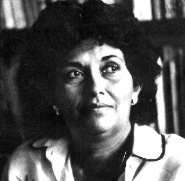

HOME FUNDEF
Daría Hernández
Daría Hernández
Antropólogo graduada en la Universidad Centra de Venezuela, 1965. Conservadora del Museo de Folklore (1971-1972). Directora del Museo Nacional del Folklore (1973-1985). Directora del Centro para las Culturas Populares y Tradicionales del Consejo Nacional de la Cultura y del Centro Interamericano de Etnomusicología y Folklore del Programa de desarrollo Cultural de la O.E.A.
Ha publicado en forma independiente y en coautoría con Cecilia Fuentes una serie de trabajos de investigación sobre tradiciones populares.